Add a Node and Rebalance
A new Couchbase Server node can be added to an existing cluster.
Understanding Node-Addition
Full and Cluster administrators can use the UI, CLI, or REST API to add Couchbase Server nodes to existing clusters. On each node to be added, Couchbase Server must have been installed and started. The process of node-addition grants to the new node the settings already established for the parent cluster. (See Manage Settings for details.) The process allows services to be assigned to the new node. If the new node was previously initialized with custom disk-paths, these can either be retained or modified. All aspects of provisioning that may previously have occurred on the new node are eliminated: this includes buckets, services, and settings.
Following node-addition, rebalance is required, to make the new node an active member of the cluster.
Node-Addition and Certificate-Management
The examples on this page assume that the default, system-generated certificates provided by Couchbase Server continue to be resident on the cluster and the node to be added. In a production or similar context, to ensure security, only administrator-configured certificates should be used on a cluster: these should rely on a well known Certificate Authority, whose certificate is loaded as the cluster’s root certificate. (For more information, see Default Certificates and Certificate Substitution.)
In such a context, no node can be added to the cluster until conformant administrator-configured certificates have been loaded onto it — such activities will thus need to be performed in addition to those shown by the examples on this page.
For more information, see Adding and Joining New Nodes. A complete overview of Couchbase-Server certificate-management is provided in Certificates.
Examples on This Page
The examples in the subsections below show how to add the same node to the same one-node cluster; using the UI, the CLI, and the REST API respectively. The examples assume:
-
A one-node cluster already exists; and is named after its IP address:
10.142.181.101. It is running the Data, Query, and Index services, and has thetravel-samplebucket installed. (To access and install this, see Sample Buckets.) -
A new node has been started. This is named after its IP address:
10.142.181.102. It has not been initialized or provisioned. -
The cluster has the Full Administrator username of
Administrator, and password ofpassword. -
The cluster is protected by the default Couchbase-Server certificate-configuration.
Add a Node and Rebalance with the UI
Proceed as follows:
-
Bring up Couchbase Web Console, and log into cluster
10.142.181.101, using the Full Administrator username and password. Access the Servers tab, in the left-hand navigation bar: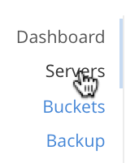The Servers screen for the cluster is now displayed:
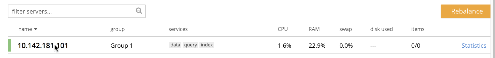This shows the name of the only node currently in the cluster,
10.142.181.101, plus additional information, including the services hosted. -
Ensure that the node to be added has been started. This can be accomplished by checking the IP address and port number for the new node in the address bar of the browser. The following interface is displayed:
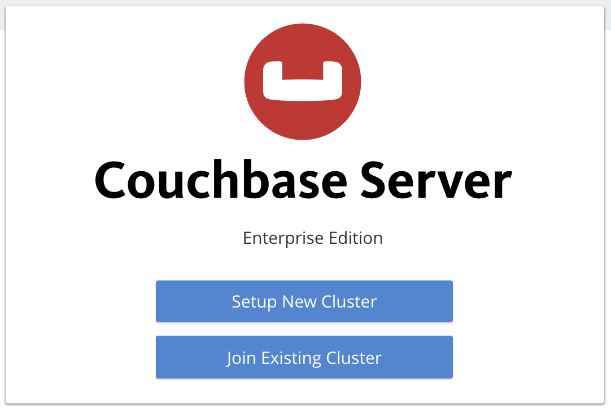This indicates that Couchbase Server is installed and running on the new node, but has not yet been provisioned. Do not use this interface: instead, return to Couchbase Web Console for the cluster,
10.142.181.101. -
In the Servers panel for the cluster, left-click on the ADD SERVER button, at the upper right:
The Add Server Node dialog is now displayed:
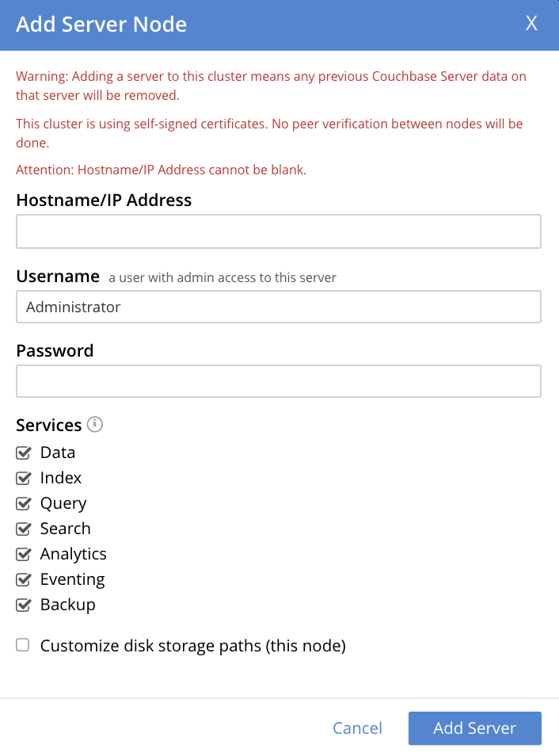Note the warning provided at the top of the dialog: if the node to be added has already been provisioned, the results of such provisioning will be eliminated and replaced on the node’s addition to the current cluster. (In fact, the node to be added in this example, has neither been initialized nor provisioned.)
-
Specify the IP address of the node to be added. A placeholder password must be specified, even though the node has not yet been provisioned with one. Uncheck all of the Services check-boxes except Data. The dialog now appears as follows:
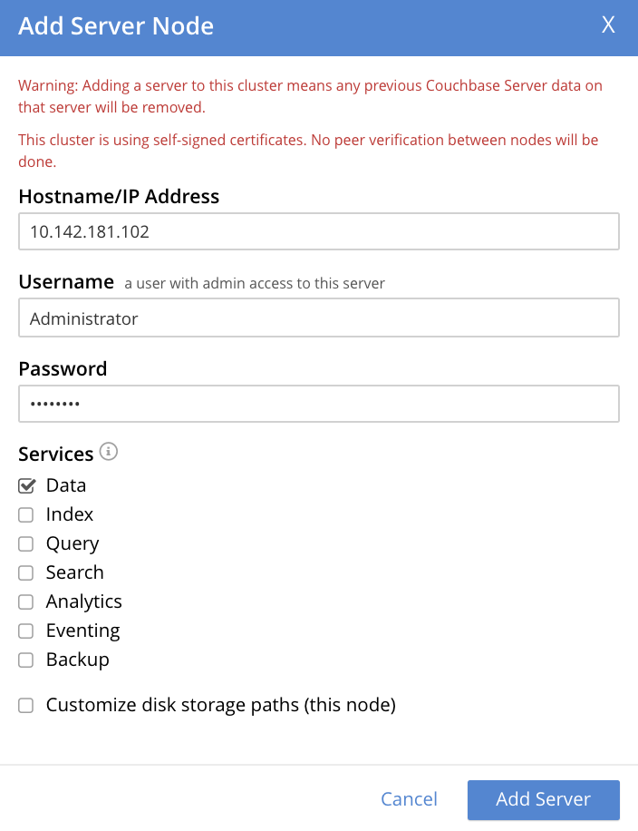Optionally, the Customize disk storage paths (this node) checkbox can be checked, to display interactive fields that allow such paths to be modified for the node that is to be added:
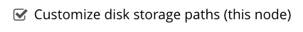The dialog is now extended vertically, to display the interactive fields for Data, Indexes, and Analytics data paths:
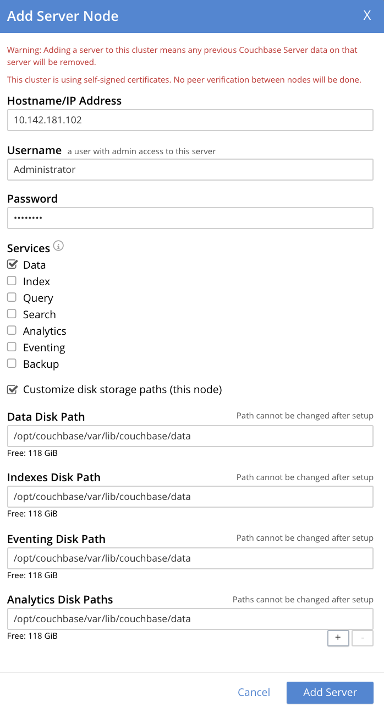For the current example, the displayed, default paths do not need to be modified.
Left-click on the Add Server button to save the settings. The Servers screen is redisplayed, with the following appearance:
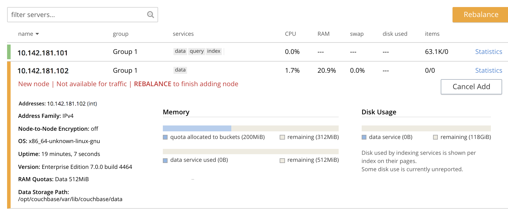This indicates that the new node,
10.142.181.102has been successfully added. However, it is not yet taking traffic, and will be added following a rebalance. Note, at this point, the figure under the Items column for for10.142.181.101: this is63.1 K/0, which indicates that the node contains 63.1 K items in active vBuckets, and 0 items in replica vBuckets. Meanwhile, the Items figure for10.142.181.102is 0/0, indicating that no items are yet distributed onto that node in either active or replica form.For an architectural description of how vBuckets and their items are distributed across a cluster, see Intra-Cluster Replication.
-
To perform a rebalance, left-click on the Rebalance button, at the upper right:

The new node is rebalanced into the cluster, meaning that whatever active and replica vBuckets were previously distributed across the original cluster nodes are redistributed across the superset of nodes created by the addition. Additionally, a Rebalance dialog is displayed:
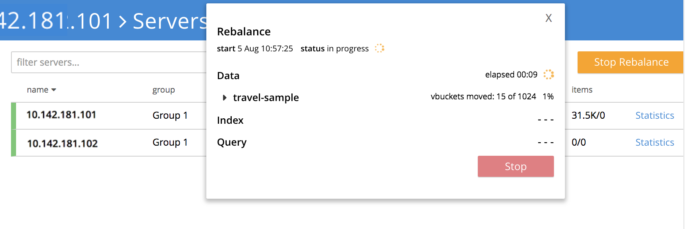The dialog indicates rebalance progress for each of the services on the cluster. To see more information on the progress related to the Data Service, left-click on the travel-sample tab, under Data: The pane expands to provide additional information on the progress of data-transfer for the travel-sample bucket:
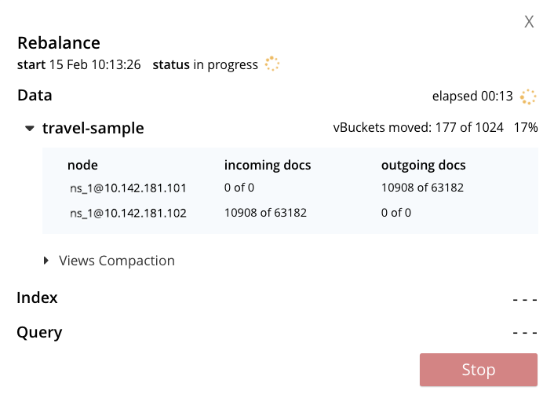The dialog indicates the progress of both vBuckets and documents, as they are moved between nodes. Average times for Views Compaction are also provided.
A new panel now appears at the bottom of the Servers screen. This also reports rebalance progress:
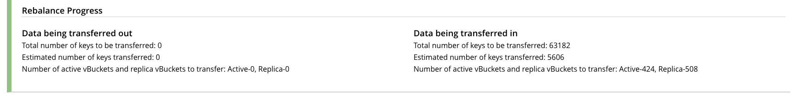When the rebalance is complete, the panel at the bottom of the screen disappears, and the dialog appears as follows:
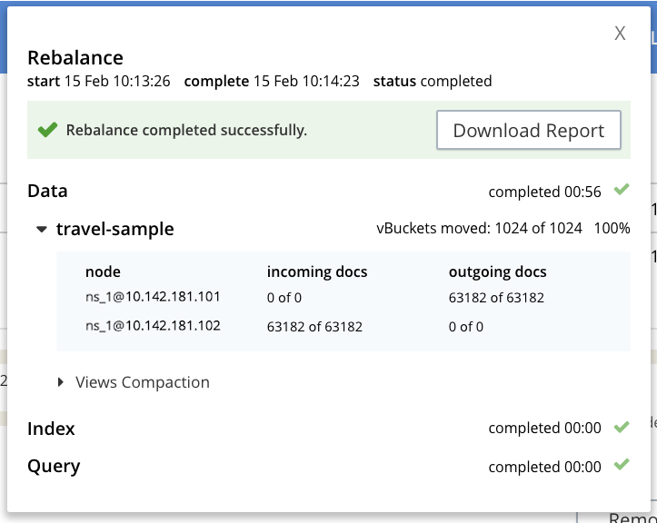Note that time-completion figures are also provided for the other services, Index and Query. Additionally, a complete report on the concluded rebalance activity can be downloaded, by left-clicking on the Download Report button:
See the Rebalance Reference, for information on the contents of the report.
Left-click on the X at the upper-right of the dialog, to dismiss the dialog.
The Servers screen now displays two rows — one each for servers
10.142.181.101and10.142.181.102. Left-click on the row for10.142.181.102, to open it. The screen now appears as follows:
Note that the figure in the Items column for node
10.142.181.101is31.5 K/31.6 K, which indicates that 31.5 K items are stored on the node in active vBuckets, and 31.6 K in replica vBuckets. The figure for10.142.181.102indicates the converse. Therefore, replication has successfully distributed the contents oftravel-sampleacross both nodes, providing a single replica vBucket for each active vBucket.
Node Information Within the UI
When the row for a node is open, as is the case here for 10.142.181.102, information on the node is displayed immediately under its name:
-
Addresses provides at a minimum the internal IP address of the node; and also lists external (that is, alternate) IP addresses, if they have been defined — see Alternate Addresses, for information.
-
The Address Family of the node is specified as either IPv4 or IPv6: see Manage Address Families, for information.
-
Node-to-Node Encryption for the cluster is specified as either enabled or disabled: see Manage Node-to-Node Encryption.
-
The Version of the Couchbase-Server instance on the node, its current Uptime, and the OS on which it runs are also specified.
-
The RAM Quotas for each service on the node, and each established Storage Path (for one or more of Data, Indexes, Eventing, and Analytics) are specified: see Create a Cluster for examples of how to establish these.
Rebalance Failure Notification
If rebalance fails — for example, due to a node’s becoming non-responsive — Couchbase Web Console displays a notification such as the following:
As this indicates, detailed information can be found by left-clicking on the Logs tab, in the left-hand, vertical navigation bar. This brings up the Logs screen, containing information such as the following:
Information is also provided on the Rebalance dialog:
If an unresponsive node become responsive again, rebalance can simply be reattempted manually. Alternatively, the handling of a rebalance-failure can be configured to occur automatically, as described immediately below.
Before attempting rebalance with a reduced number of nodes, assess whether the available resources can support the intended number of replicas. See Removal, for guidance.
Automated Rebalance-Failure Handling
The handling of a rebalance-failure can be configured to occur automatically. Configuration occurs by means of the General settings screen. Up to 3 retries can be configured. Each retry occurs after the elapsing of a time-period specified by the administrator, in seconds. By default, automated rebalance-failure handling is not enabled. For detailed information, see Rebalance Settings.
If automated rebalance-failure handling has been enabled (meaning that between 1 and 3 retries have been specified), following a rebalance failure, the following notifications appear at the lower left of the main screen of Couchbase Web Console:
The middle notification indicates that a retry is planned, in accordance with the configuration made on the General settings screen. The displayed integer represents the number of seconds remaining before the retry is commenced; and is gradually decremented, from the configured maximum to zero; at which point, retry is commenced.
If a retry fails, additional retries occur successively; until the maximum configured number have been attempted.
Retry-Cancellation
If one or more retries have been configured, and, following a rebalance failure, a retry is pending, no administrative tasks should be performed on the cluster. Instead, either allow configured retries continue occurring — until one has succeeded, or all have failed; or cancel the entire retry sequence. Then, continue performing administrative tasks as appropriate.
To cancel, left-click on the CANCEL RETRY link, on the retry notification. Note that this cancels all currently scheduled retries. However, the configured number of retries will be rescheduled for each subsequent, manually initiated rebalance.
Retries can also be cancelled by means of the CLI and the REST API. See Cancel Retries with the CLI and Cancel Retries with the REST API, below.
Restricting the Addition of Nodes
To ensure cluster-security, in Couchbase Server Version 7.1.1+, restrictions can be placed on addition, based on the establishment of node-naming conventions. Only nodes whose names correspond to at least one of the stipulated conventions can be added. For information, see Restrict Node-Addition.
Add a Node and Rebalance with the CLI
To add a new Couchbase Server-node to an existing cluster, use the server-add command.
Note that this command requires that arguments be provided for its --server-add-username and --server-add-password flags.
In this case, meaningful arguments do not exist, since the new node features an instance of Couchbase Server that is running, but has not been provisioned with a username or password.
Therefore, specify placeholder arguments.
Additionally, specify that the data service be run on the node, once it is part of the cluster.
Note that a server to be added (as specified by the value of the server-add parameter) can be prefixed with the scheme https://, and/or with the port 18091): if no scheme and no port is specified, https:// and 18091 are used as defaults.
The scheme http:// cannot be used, nor can the port 8091: since in 7.1+, addition must occur over a secure connection.
couchbase-cli server-add -c 10.142.181.101:8091 \ --username Administrator \ --password password \ --server-add https://10.142.181.102:18091 \ --server-add-username someName \ --server-add-password somePassword \ --services data
If successful, the command returns the following:
SUCCESS: Server added
The newly added node must now be rebalanced into the cluster. Use the rebalance command:
couchbase-cli rebalance -c 10.142.181.101:8091 \ --username Administrator \ --password password
During rebalance, progress is displayed as console output:
Rebalancing Bucket: 01/01 (travel-sample) 60714 docs remaining [===== ] 4.56%
If successful, the command returns the following:
SUCCESS: Rebalance complete
Note that when the operation is highly complex, it may be desirable to get status on its progress, or stop the operation. See the command reference for rebalance-status and rebalance-stop, for more information.
Cancel Retries with the CLI
Retries (described above, in Automated Rebalance-Failure Handling) can be cancelled with the CLI, by means of the setting-rebalance command.
Note that use of setting-rebalance for setting and getting the current rebalance-failure configuration is documented in General Settings.
If, following a rebalance failure, a retry is pending, retrieve information on the pending retry as follows. Note that the command is piped to the jq program, to facilitate readability:
/opt/couchbase/bin/couchbase-cli setting-rebalance \ -c 10.143.192.101 \ -u Administrator \ -p password \ --pending-info | jq '.'
This returns the following object:
{
"retry_rebalance": "pending",
"rebalance_id": "29d89aa757097523898588c28efd3b4a",
"type": "rebalance",
"attempts_remaining": 2,
"retry_after_secs": 184,
"known_nodes": [
"ns_1@10.143.192.101",
"ns_1@10.143.192.103"
],
"eject_nodes": [],
"delta_recovery_buckets": "all"
}
The output indicates that a retry_rebalance is pending, and indicates that the rebalance_id for the pending retry is 29d89aa757097523898588c28efd3b4a.
This id can be used to cancel the current retry sequence.
The output also indicates that 2 further retries are scheduled to be made, if necessary; and the 184 seconds remain before the next retry starts.
The nodes in the cluster are listed.
None is specified to be ejected.
All buckets are selected for delta recovery.
The current rebalance sequence can be cancelled by means of the setting-rebalance command, specifying the retrieved rebalance_id.
Enter the following:
/opt/couchbase/bin/couchbase-cli setting-rebalance \ -c 10.143.192.101 \ -u Administrator \ -p password \ --cancel \ --rebalance-id 29d89aa757097523898588c28efd3b4a
If successful, the command returns the following:
SUCCESS: Rebalance retry canceled
Add a Node and Rebalance with the REST API
To add a new Couchbase Server-node to an existing cluster, use the /controller/addNode URI.
The following command adds node 10.142.181.102 to cluster 10.142.181.101.
Note that a server to be added can be prefixed with the scheme https://, and/or can be suffixed with the port 18091): if no scheme or port is specified, https:// and 18091 are used as defaults.
The scheme http:// cannot be used; nor can the port 8091, since in 7.1+, node-addition takes place only over a secure connection.
curl -u Administrator:password -v -X POST \ 10.142.181.101:8091/controller/addNode \ -d 'hostname=10.142.181.102&user=someName&password=somePassword&services=kv'
Note that the argument passed for services is kv, which signifies the Data Service.
Optionally, other services can be specified: index (Index Service), n1ql (Query Service), eventing (Eventing Service), fts (Search Service), and cbas (Analytics Service).
If multiple services are specified, this should be as a comma-separated list: for example, n1ql,index,fts.
As with the CLI command shown above, a username and password are expected, even though in this case, the new node has not been provisioned: therefore, placeholders are used. If successful, the command returns the name of the newly added node:
{"otpNode":"ns_1@10.142.181.102"}
The newly added node must now be rebalanced into the cluster. Use the /controller/rebalance URI, as follows:
curl -u Administrator:password -v -X POST \ 10.142.181.101:8091/controller/rebalance \ -d 'knownNodes=ns_1@10.142.181.101,ns_1@10.142.181.102'
Note that the knownNodes argument lists each of the nodes in the cluster.
If successful, the command returns no output.
For further information on adding nodes with the REST API, see Adding Nodes to Clusters; on rebalancing, see Rebalancing the Cluster.
Cancel Retries with the REST API
Retries (described above, in Automated Rebalance-Failure Handling) can be cancelled with the REST API.
Note that use of the REST API for setting and getting the current rebalance-failure configuration is documented in Rebalance Settings via REST.
If, following a rebalance failure, a retry is pending, use the GET /pools/default/pendingRetryRebalance http method and URI to identify the pending retry, as follows.
Note that this example uses the jq tool, to facilitate readability of output.
curl -u Administrator:password -v -X GET \ http://10.143.192.101:8091/pools/default/pendingRetryRebalance | jq '.'
The output is as follows:
{
"retry_rebalance": "pending",
"rebalance_id": "ff5845cdce693db2dce9a9308cbf885d",
"type": "rebalance",
"attempts_remaining": 2,
"retry_after_secs": 291,
"known_nodes": [
"ns_1@10.143.192.101",
"ns_1@10.143.192.103"
],
"eject_nodes": [],
"delta_recovery_buckets": "all"
}
This indicates that the status of retry_rebalance is pending; and provides a rebalance_id for the process, of ff5845cdce693db2dce9a9308cbf885d.
This id can be used to cancel the retry.
The output also lists the cluster’s nodes, indicates that 2 retry attempts are scheduled to occur if necessary after the current one, and indicates that 291 seconds are still to elapse before the pending retry.
To cancel the pending retry, use the POST /controller/cancelRebalanceRetry http method and URI, specifying the retrieved rebalance_id as the endpoint:
curl -u Administrator:password -v -X POST \ http://10.143.192.101:8091/controller/cancelRebalanceRetry/ff5845cdce693db2dce9a9308cbf885d
If successful, this produces a HTTP/1.1 200 OK success message.
Subsequently, the GET /pools/default/pendingRetryRebalance http method and URI can again be used, to verify that there is no longer a retry pending.
This would be indicated by the following output:
{
"retry_rebalance": "not_pending"
}
All scheduled retries have thus been successfully cancelled.
Note that reference pages for these commands are provided at Get Rebalance-Retry Status and Cancel Rebalance Retries.
Next Steps
As well as supporting a cluster’s adding a node to itself, Couchbase Server also supports a node’s joining itself to a cluster (which is essentially the same operation, but proceeding from the node, rather than from the cluster). See Join a Cluster and Rebalance for details.